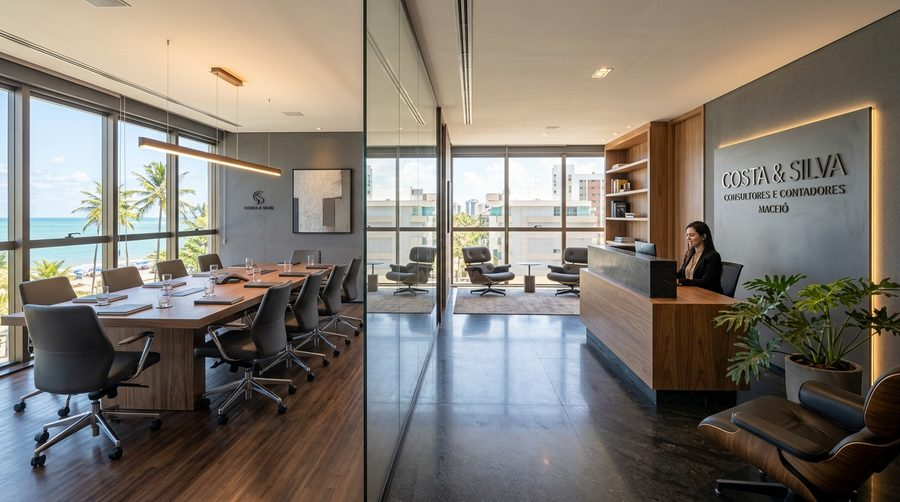

Sua empresa precisa de um endereço empresarial, mas suas atividades não exigem uma estrutura comercial exclusiva?
Conheça as possibilidades de endereço fiscal e endereço virtual em Maceió, considerando as regras de registro, localização e licenciamento aplicáveis.

Endereço fiscal é a referência de localização utilizada no cadastro oficial de uma empresa perante os órgãos competentes (Receita Federal, JUCEAL e Prefeitura de Maceió), observadas as regras que se aplicam à sua atividade e natureza jurídica.
É um elemento essencial da identificação cadastral da pessoa jurídica no Contrato Social e no Cartão CNPJ.
Entretanto, utilizar um endereço fiscal não significa estar automaticamente autorizado a exercer qualquer atividade física ou industrial naquele local. As exigências de viabilidade e licenciamento continuam plenamente aplicáveis.
Endereço virtual é uma expressão comercial normalmente utilizada para serviços que oferecem uma referência de endereço empresarial sem exigir que o contratante alugue ou mantenha uma sala física exclusiva de alto custo.
Os serviços incluídos podem variar conforme a necessidade contratada: disponibilização do endereço para documentos, gestão e aviso de correspondências recebidas e funcionalidades de apoio.
O endereço virtual não deve ser confundido automaticamente com autorização irrestrita de funcionamento físico de portas abertas ao público.
Compreenda o objetivo de cada modalidade antes de decidir o registro da sua empresa:
| Modalidade | Característica principal |
|---|---|
| Endereço fiscal | Referência utilizada estritamente para fins cadastrais, societários e fiscais perante os órgãos públicos (Receita, Junta Comercial e Prefeitura). |
| Endereço comercial | Local utilizado para divulgação institucional, marketing, contato com clientes, site e eventual representação comercial. |
| Endereço virtual | Solução contratual abrangente que disponibiliza um endereço institucional e, eventualmente, serviços adicionais de correspondência. |
| Escritório físico | Estabelecimento imobiliário próprio ou alugado com sala exclusiva, utilizado para realizar atividades presenciais diárias ou operacionais. |
Um mesmo endereço pode cumprir mais de uma dessas funções simultaneamente, desde que as condições contratuais, a convenção predial e os licenciamentos legais permitam.
O serviço é especialmente indicado para empresas e profissionais que trabalham remotamente ou não possuem necessidade de um estabelecimento físico exclusivo.
Em determinadas situações, sim! Desde que a atividade econômica (CNAE) seja admitida no zoneamento municipal para aquele endereço e que todas as exigências cadastrais sejam rigorosamente cumpridas.
A abertura de um CNPJ não se resume à escolha de um endereço: é indispensável analisar natureza jurídica, CNAEs primários e secundários, documentação dos sócios e regras municipais de licenciamento.
O portal oficial da REDESIM orienta que seja realizada consulta prévia de viabilidade locacional antes do protocolo societário, assegurando que o município de Maceió autorize o exercício daquela atividade.
Cinco verificações fundamentais para garantir tranquilidade jurídica e operacional ao seu CNPJ:
Algumas atividades econômicas exigem estrutura física dedicada, isolamento acústico, vigilância sanitária ou alvarás ambientais específicos incompatíveis com domicílio compartilhado.
A aprovação deve observar os procedimentos do portal REDESIM Maceió para o CEP e a atividade pretendida antes de assinar contratos.
É fundamental saber quais serviços estão expressamente incluídos, tempo mínimo de contratação, multas rescisórias e prazos de notificação.
Verifique como as cartas, notificações judiciais e comunicados fiscais serão recebidos, triados, digitalizados ou entregues ao gestor.
Conheça com antecedência os trâmites contábeis necessários caso sua empresa cresça e precise alterar o endereço para uma sede comercial exclusiva.
O endereço no bairro do Farol transmite credibilidade institucional e excelente imagem corporativa aos seus clientes e parceiros em Alagoas.
São conceitos próximos, mas não necessariamente idênticos em todas as hipóteses.
O domicílio tributário segue regras específicas do Código Tributário Nacional (CTN) e de convênios fiscais para notificações da administração fazendária. O endereço fiscal é a designação cadastral constante no registro mercantil da empresa.
A forma como cada endereço é utilizado precisa respeitar as diretrizes da Junta Comercial e do Fisco estadual e municipal.
Não necessariamente. O direito de realizar atendimentos presenciais ou utilizar salas de reunião depende estritamente das condições contratadas e da infraestrutura disponibilizada.
O fornecimento básico de endereço fiscal não equivale à locação de uma sala comercial contínua de portas abertas.
Nota institucional e conformidade: Antes de qualquer contratação, a equipe da Concentre Contabilidade realiza a validação prévia da atividade do cliente, das regras de zoneamento da Prefeitura de Maceió, da documentação societária e dos procedimentos de recebimento de correspondências. Essas características não são presumidas, garantindo conformidade jurídica total.
Tudo o que você precisa saber antes de registrar seu domicílio empresarial em Maceió.
Pode ser possível, dependendo da atividade pretendida, da aprovação prévia de viabilidade locacional na Prefeitura de Maceió e do cumprimento das exigências cadastrais na Junta Comercial.
Não obrigatoriamente. O escritório virtual compreende um pacote amplo de serviços (atendimento telefônico, salas de reunião), enquanto o endereço fiscal se refere especificamente à referência cadastral do CNPJ.
O uso de endereço em perfis do Google Empresa / Google Maps deve seguir as diretrizes rigorosas da plataforma. Contratar endereço fiscal não garante elegibilidade para exibir um ponto com atendimento físico presencial ao público no mapa.
Sim, desde que a gestão e aviso de correspondências faça parte do escopo contratado com a Concentre.
Não. Atividades industriais, comércio com estoque físico expressivo ou clínicas com procedimentos invasivos dependem de instalações físicas especializadas e licenças específicas.
Sim. É feita uma alteração contratual na Junta Comercial (JUCEAL) e nos cadastros da Receita Federal e Prefeitura de Maceió, respeitando os procedimentos oficiais.
Não. O endereço fiscal é o local cadastral, mas todas as licenças, alvarás sanitários ou do Corpo de Bombeiros (quando exigidos pela atividade) continuam sendo de cumprimento obrigatório.
Entre em contato com a Concentre Contabilidade pelo telefone (82) 3202-6489 ou visite nossa sede na Rua João Nogueira, 80, Farol, Maceió para checarmos a viabilidade do seu CNPJ.